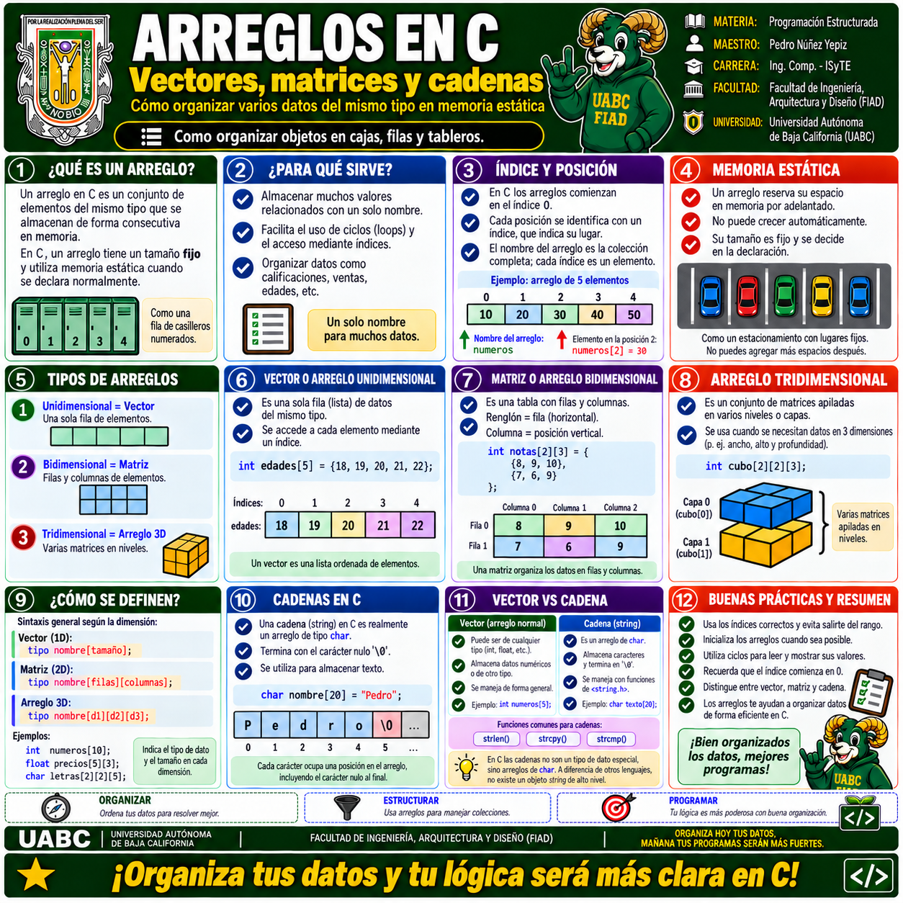
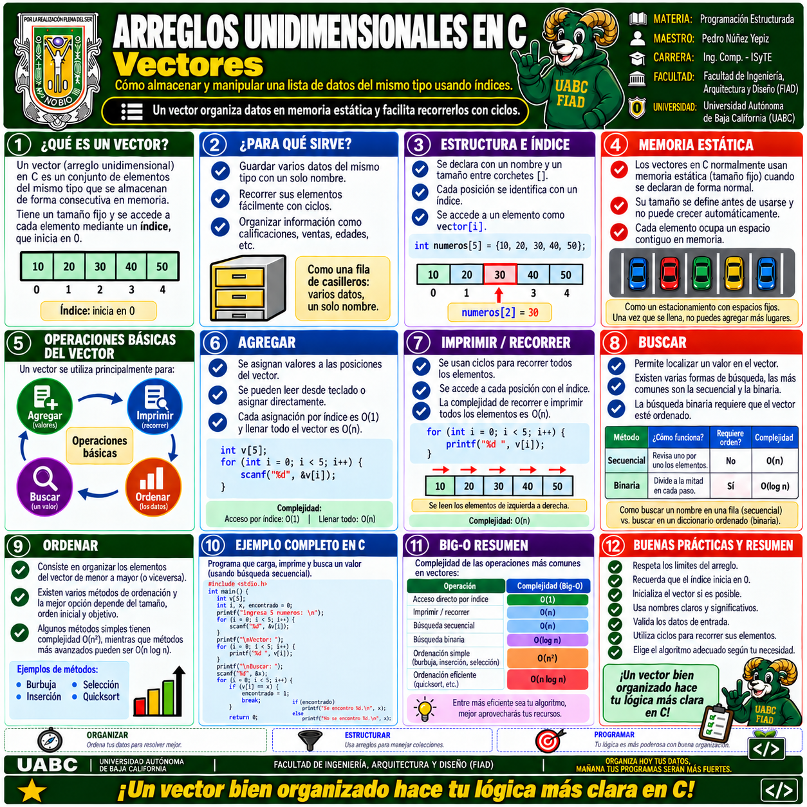
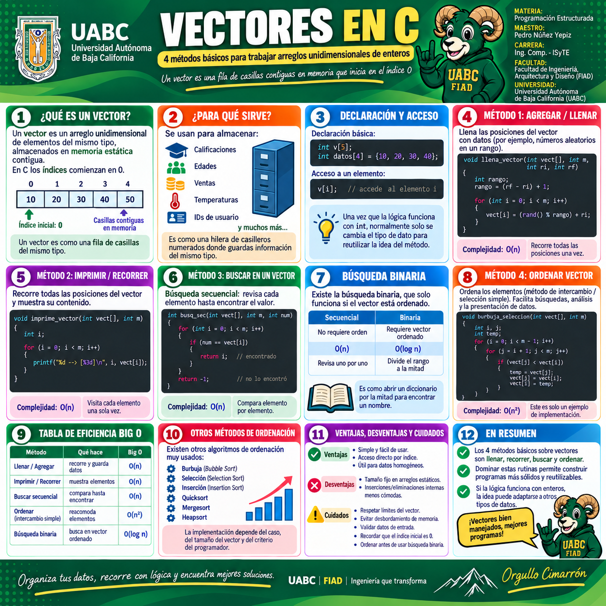
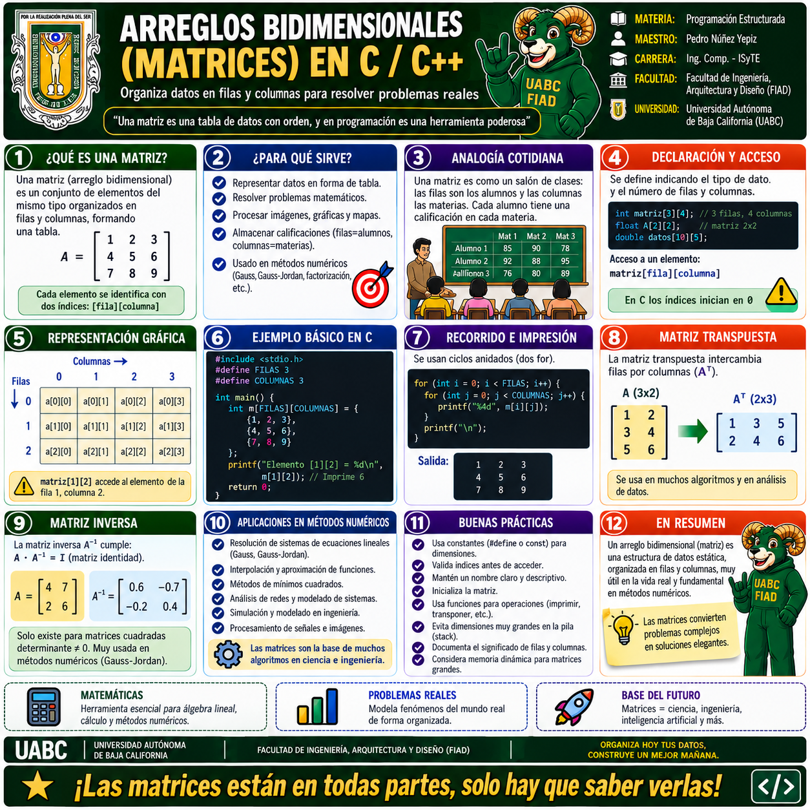
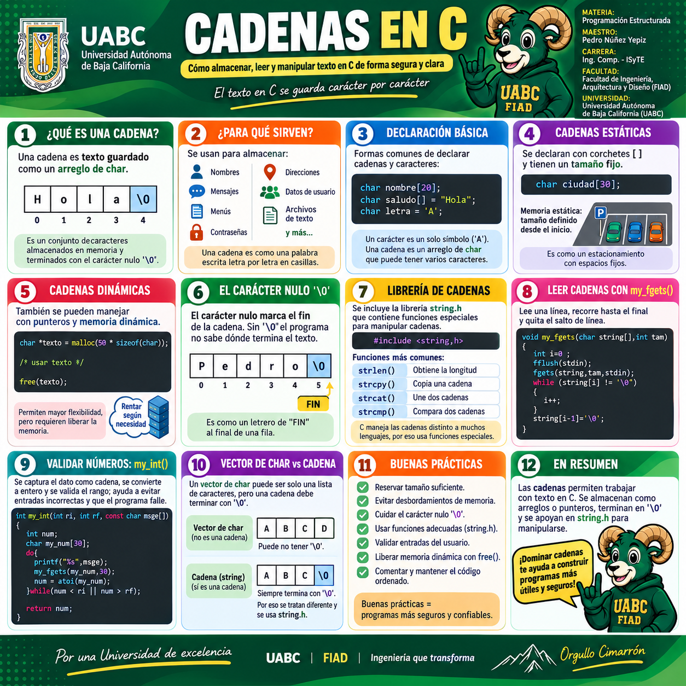

🧩 Galería visual de Arreglos en C
El tema se organiza desde el concepto general de arreglo hasta sus principales aplicaciones: vectores, matrices y cadenas. Selecciona una infografía para verla a pantalla completa y utilizar el zoom.

1 · Arreglos en C
Panorama general: definición, memoria estática, índice y posición, tipos de arreglos, vectores, matrices, arreglos tridimensionales, cadenas y buenas prácticas.

2 · Arreglos unidimensionales · Vectores
Explica estructura, índices, memoria estática y las operaciones básicas: agregar, recorrer, buscar y ordenar elementos de un vector.

3 · Métodos básicos para vectores
Llenar, imprimir, buscar y ordenar. Incluye búsqueda secuencial, búsqueda binaria, complejidad Big-O y recomendaciones para construir métodos reutilizables.

4 · Arreglos bidimensionales · Matrices
Filas, columnas, declaración, acceso, recorrido mediante ciclos anidados, representación gráfica, matriz transpuesta y aplicaciones en métodos numéricos.

5 · Cadenas en C
Una cadena como arreglo de char, carácter nulo
'\0', lectura segura, memoria dinámica y funciones de
<string.h> como strlen(),
strcpy(), strcat() y strcmp().
Comienza con Arreglos en C para comprender el concepto general. Continúa con Vectores y sus métodos de procesamiento; después estudia Matrices y termina con Cadenas, recordando que en C una cadena es un arreglo de caracteres terminado por
'\0'.